My Blog

Grasshopper 105
05/07/2024
Diseño Paramétrico
Habilidades, Consejos y plugins
Descargo de responsabilidad
LAHV Design es un proyecto personal sin fines de lucro, todos los recursos(redactados y/o descargables) aquí compartidos son libres de uso, sin embargo no me hago responsable de ninguna manera de las decisiones que terceros tomen con dicho recuso.
Ahora que ya entendemos un poco mejor el entorno de programación de grasshopper, puedo darle unas recomendaciones sobre programación visual en general y unos accesorios que puedes usar para potenciar tus definiciones.
Discretizacion de parametros
En la programación si tienes variables que no ocupas solo llenas memoria de computo en vano, para evitar esto. Tratamos de colocar valores fijos en los componentes internos.
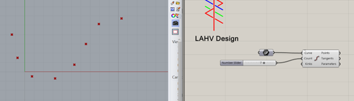Por ejemplo, si no deseo mover este slider cuando ya encontré la cantidad que deseo manipular, hago clic derecho en la variable “count “del bloque divide curve. Y selecciono internalize data.
Esto lo que hace es guardar el numero 7 de mi slider y desconectarlo entonces ya puedo borrarlo,
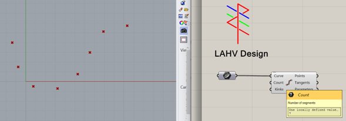Si coloco el mouse sobre la entrada “count” sin hacer clic me indica que valor tiene almacenado.
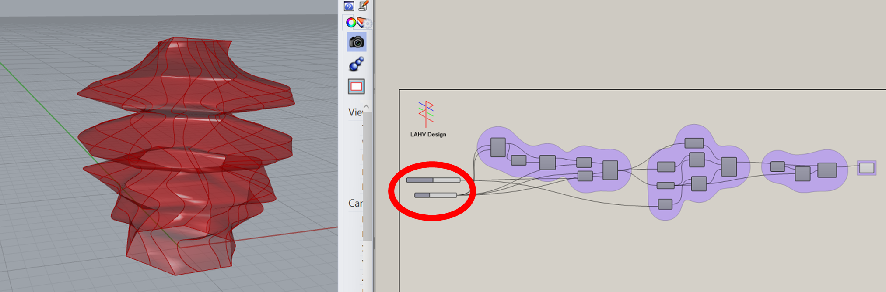Retomando el ejemplo Anterior de la vasija, podemos ver que todas las variables que deberíamos estar manipulando salen de solo 2 sliders al lado izquierdo del algoritmo.
Limpieza en el codigo
No hay nada más frustrante que hacer una definición con paneles por todos lados. Los paneles deberían ser usados con discreción. Para indicar listas de valores.
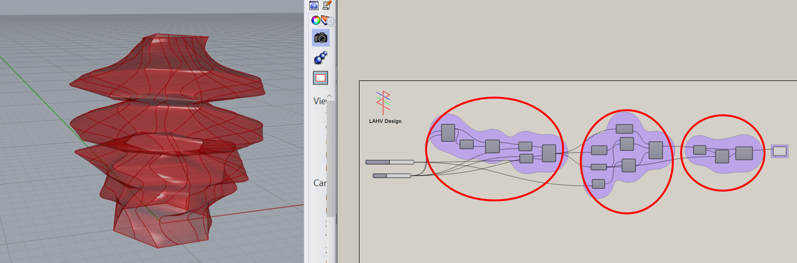La limpieza en el código ayuda a su posterior interpretación para eliminar errores. O posibles puntos de quiebre. En este ejemplo también podemos ver que el código sigue una secuencia lógica de izquierda a derecha y podemos agruparlo en diferentes etapas y analizarlos de manera independiente.
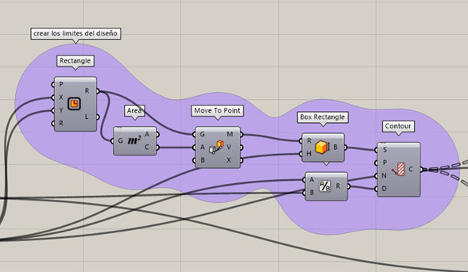Podemos crear grupos si seleccionamos uno o mas componentes y haciendo un clic derecho en el lienzo de trabajo seleccionamos group.
También podemos crear grupos dentro de grupos. Y asignar colores.
Otra forma de discretizar parámetros es creando cúmulos o clusters en grasshopper.
Imaginemos que tomamos que tomamos una caja de cartón y en ella colocamos dentro todos los componentes y luego la cerramos, por fuera solo vamos a ver una caja a la que le entran y le salen cables pero adentro ya no podemos alterar cosas tan fácilmente.
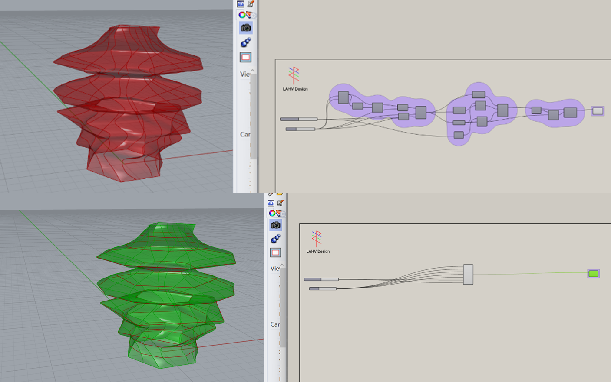Esto lo podremos hacer seleccionando nuestros componentes y haciendo clic derecho seleccionamos cluster
Comentarios
Muchas veces como diseñadores y programadores sometemos nuestro trabajo a revisiones de terceros para aprobar, por lo que una práctica común en programación es crear algo llamado comentario, que se trata de una línea de texto a manera de nota indicando la función de realizara a ese punto del código. Por ejemplo.
if(button ==HIGH){ //esta línea indica la condiciónDigitalWrite(led,HIGH);//esta line indica la acción si la condición se cumple
}
En lenguaje de programación los comentarios comienzan con el símbolo “//” y todo lo que siga hasta detectar un cambio de renglón será ignorado en la programación.
En grasshopper podemos dejar comentarios en el código de varias formas, veamos las más comunes.
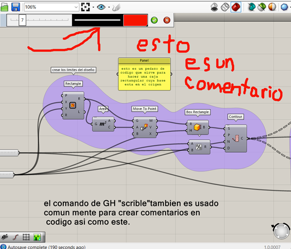En la imagen anterior podemos ver cuatro formas de hacer comentarios en GH la primera es crear una entrada manual de notas con el lápiz en la parte superior del entorno de trabajo con la cual podemos comenzar a dibujar con el mouse, la segunda forma es colocar un panel sobre la definición son conectar a nada solo con el comentario que queremos enfatizar la tercera forma es colocándole un nombre al componente o a un grupo de componentes haciendo clic derecho sobre cada componente podemos editar su nombre o colocar un texto como en el caso del grupo. Y La última forma más común de encontrar comentarios para el lector seria usar un comando “scribble” este texto tiene el beneficio que no resta capacidad de cómputo, esto es especialmente importante cuando tenemos grandes cantidades de información que procesar al mismo tiempo, si tenemos muchos comentarios hechos con paneles, esto comienza a sumarse considerablemente.
Coherencia en la programación
Al principio es normal que se nos rompa el código cuando movemos un slider y nos salgan muchos errores, parte de nuestro trabajo será Depurar nuestro algoritmo de variables redundantes, vagas u obsoletas.
Si estoy definiendo un limite de trabajo de 250x250y250z y en la vista de planta muevo un objeto a 250x,500y,250z fuera de esta definición estoy siendo incoherente con mi primer argumento.
Por ejemplo, si estoy manipulando una serie de planos xy y coloco un componente para crear una polilínea, pero después creo un movimiento en el eje Y, yo tengo 2 opciones crear una nueva variable con un slider o colocar el valor de Y en función del valor del cambio en X para así crear una dependencia entre las variables si muevo X muevo también Y. No importa si la función es la misma o si es proporcional. Por ejemplo, si muevo X y el incremento en Y quiero que sea igual puedo expresarlo como Y=X o si quiero que sea proporcional puedo expresarlo como Y = X-1, Y=X*0.75, Y=X/2…. Etc.
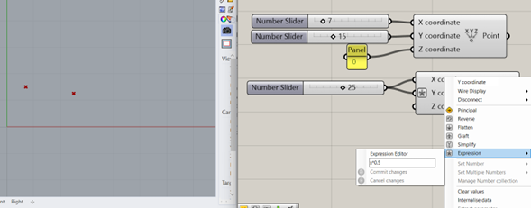Como en este ejemplo super básico el movimiento en Y depende específicamente de la expresión de valor de entrada multiplicado por el factor 0.5, lo que indica que, por cada unidad movida en X, Y se moverá la mitad de esto.
Los siguientes consejos son para acelerar un poco tu flujo de trabajo en GH.Comando buscar inteligente
Cuando buscamos un componente por lo general hacemos doble clic en el lienzo y tecleamos algo que tenga que ver con el componente deseado y el buscador nos arroja las posibles opciones.
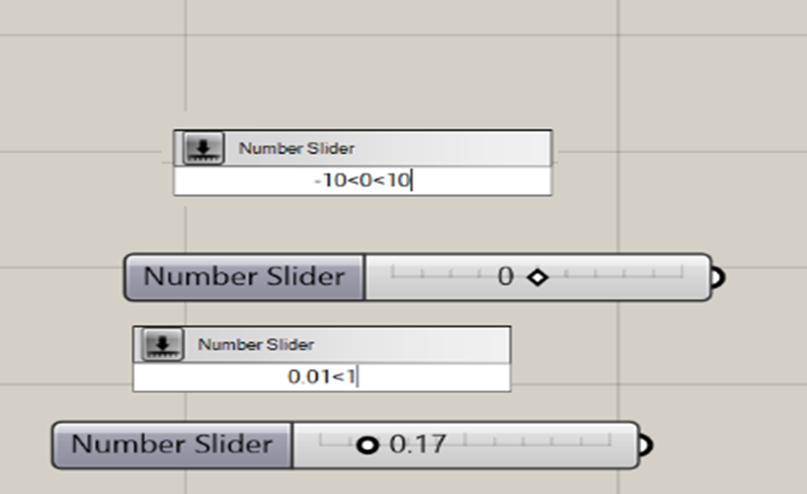Pero esta función de grasshopper es mucho más útil si hacemos por ejemplo una búsqueda de -10<0<10 nos dará un slider con este rango de números ya configurado,lo cual nos va muy bien para encontrar números en ambos lados de la recta numérica. También funciona con 0.01<1 y esto nos da un slider que puede servir para representar valores de porcentaje donde 0.01 es el 1% y 1 es 100%.
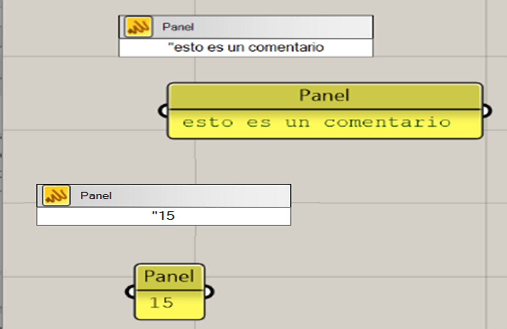Por otro lado si lo que necesitamos es un panel con un texto especifico, lo mas común es hacer doble clic, teclear panel, hacer enter, hacer doble clic en el panel, teclear el texto y para finalizar la operación hacer clic en OK. Esto puede ser mucho mas fácil si solo hacemos doble clic, tecleamos la palabra que deseamos en el panel entre comillas grasshopper entiende que ese es el texto que deseamos en el panel y lo inserta automáticamente.
una entrada, multiples cables
Este consejo no es tan intuitivo como parece, sin embargo, es posible conectar mas de una entrada un solo componente. Lo que hace es, funciona como un componente “merge” donde la lista de la segunda conexión se procesara inmediatamente después de el primer cable conectado.
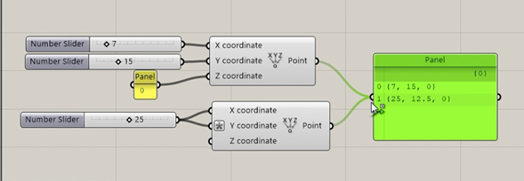Esto se logra sosteniendo la tecla shift mientras arrastramos la conexión y soltamos en el componente, nota como en la imagen superior el cursor cambia de forma y aparece una flecha verde y un símbolo +.
Elimina conexiones con el mouse
de manera similar a como creamos una conexión podemos eliminarla en grashopper si sostenemos la tecla control (ctrl) mientras arrastramos el mouse.
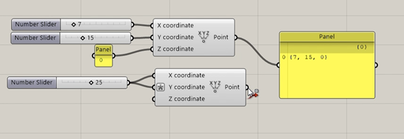Nota como mientras hacemos la desconexion el cursor cambie de forma y ahora aparece una flecha roja y un símbolo -.
Crea un flujo de lectura
Así como el bloque tiene entradas del lado izquierdo y salidas del lado derecho del componente podemos establecer un flujo de lectura propio si nuestro algoritmo lo formamos en grupos grandes podemos acomodarlo a mucha distancia entre 2 componentes importantes relacionados entre si pero de diferentes grupos.
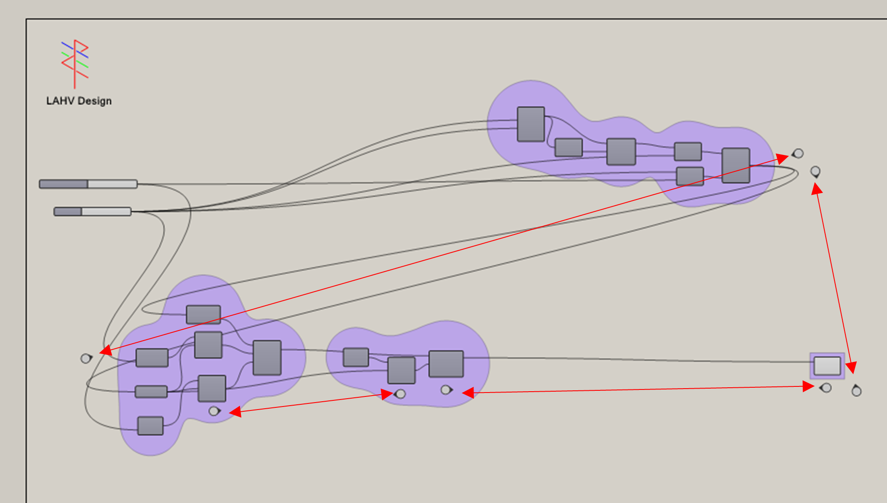El componente jump crea dos puntos de lectura que puedes dejar para que la persona que revise tu código sepa como leer el programa. Al hacer doble clic sobre uno de los circulos te lleva al siguiente punto
Hornear
En ocasiones necesitamos exportar nuestro modelo de grasshopper a otro ambiente de modelado o procesamiento digital, sin embargo, Grasshopper no nos permite exportar el modelo directamente lo que debemos hacer es convertir el objeto de grasshopper a un objeto de rhino (el proceso inverso a insertar objetos con contenedores) y este proceso se llama bake u hornear, lo que hacemos es posarnos sobre el componente que deseamos exportar por ejemplo un “loft”
Bloqueo del solucionador
Cuando trabajamos con grandes cantidades de objetos e información simultánea, nuestro ordenador puede ponerse muy lento, muy rápidamente. Por lo que a veces lo mas sensato es bloquear el solucionador, sin embargo, esto tiene la desventaja que no podrás visualizar los cambios realizados entre conexiones hasta que selecciones recompute o te salgas de este modo abriendo el candado de diable solver.
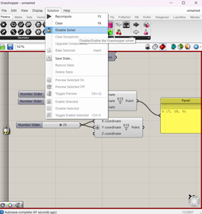Esta función la encuentras haciendo clic en solution en la barra de menús superior o haciendo un clic derecho en cualquier parte del área de trabajo y seleccionando lock solver o recompute.
Plugins
Un plugin un software que usualmente trabaja en sincronía con otro más robusto para aumentar su eficiencia en aspectos muy específicos, así mismo funcionan los plugins para grashopper.
Este software se ha ido nutriendo de su comunidad de usuarios que se encargan de crear sus propios algoritmos y formar clúster que puedes descargar como un paquete de varios clúster en forma de un archivo digital ejecutable .exe
Hay unos muy buenos que vale la pena que consideres descargar y te dejare sus paginas para que puedas darles una oportunidad.
Existe una pagina llena de esta comunidad de desarroladores muchos son comercios profesionales pero en su gran mayoría son desarrolladores independientes. Esta pagina se llama
www.food4rhino.comBifocals
En mi opinion el mas util en el uso dia a dia
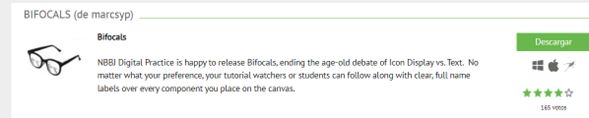 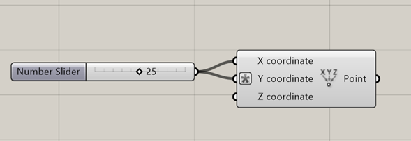El icono del componente es bueno conocerlo porque cuando buscamos un componente usualmente lo buscamos por su icono
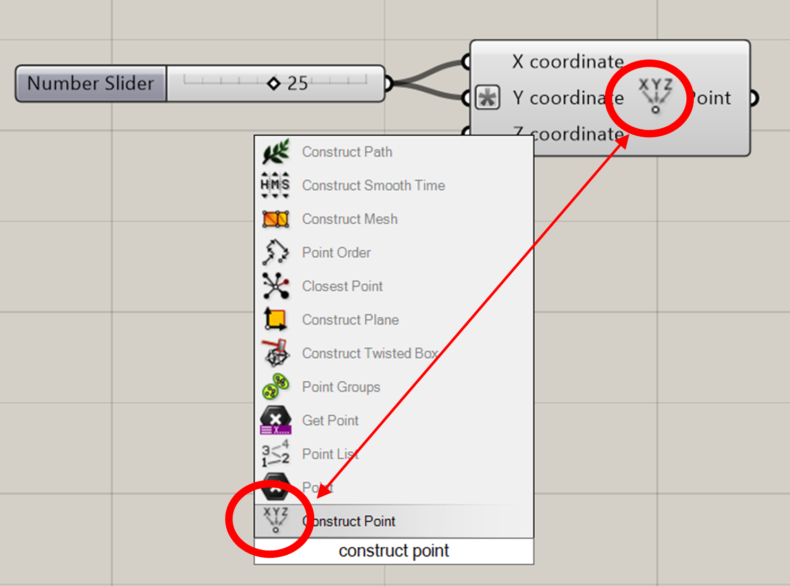Pero luego cuando estamos leyendo un código es cómodo tener a la mano el nombre del componente.
El plugin bifocals sirve mucho porque coloca etiquetas de comentario automáticamente en casi todos los componentes.
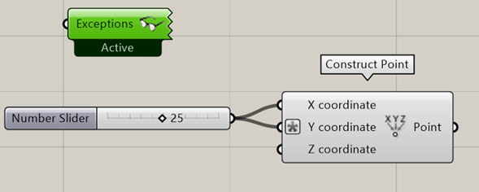 https://www.food4rhino.com/en/app/bifocalsPufferfish
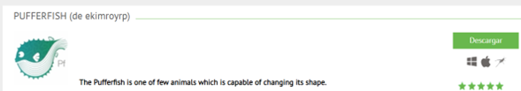Este plugin expande las capacidades de las herramientas de transformación de GH a otro nivel.
Pudiendo hacer desfaces de puntos, curvas, superficies, listas, vectores con un componente.
https://www.food4rhino.com/en/app/pufferfishKUKA | PRC
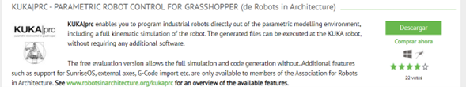Este accesorio de GH es el que yo personalmente mas uso, ya que nos permite simular y hasta generar código de programación que un brazo robótico de 6 ejes pueda ejecutar.
https://robotsinarchitecture.org/Firefly
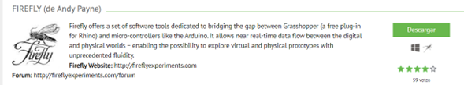Este plugin te permite utilizar un microcontrolador como el Arduino UNO para que te responda instrucciones indicadas en tiempo real desde grasshopper, incluso puedes conectar el Kinect de Microsoft. Para realizar lecturas de nubes de puntos.
https://www.fireflyexperiments.com/Mamba
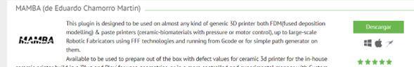Es un plugin relativamente nuevo dentro de la comunidad de makers que cada vez adquire un poco mas de potencia, este plugin te permite generar código G compatible con las impresoras mas populares de FDM.
https://www.food4rhino.com/en/app/mamba© Your Site Name. All Rights Reserved. Designed by HTML Codex